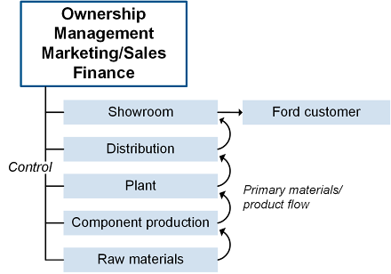
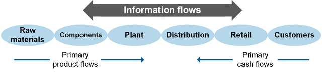
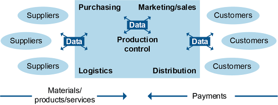

Supply chain models are useful because they simplify complex real-world supply chains and help them become more understandable. Here, we start with the most basic supply chain and then we discuss vertical versus lateral integration.
An organization's supply chain can have many forms. It can be a simple chain or a complex network or a structure that is somewhere between these two extremes. No matter whether it is a product or service chain, or what types of entities are involved, companies require their supply chains to guarantee a steady flow of supply at an acceptable cost. They can improve operating efficiency by employing the right supply chain structure.
📖 ASCM Definition — supply chain:
A supply chain, in this view, comprises a network of both entities and processes (the engineered flow). The massive chains that interest us in this course—the ones that run through corporations such as Walmart, Nestle, Boeing, Airbus, or Caterpillar—are decidedly global in scope.
📖 ASCM Definition — supply chain management:
📖 ASCM Definition — echelon:
Exhibit 1-1 shows that goods and services flow between various intermediaries or echelons in a logistics network.

The flows include information flows in each direction, cash flows that go upstream (away from the customer), goods and services flows that go downstream (toward the customer), direct flows downstream to customers from any given echelon, and reverse flows that go upstream (and refunds that go downstream).
Each supply chain or logistics network will include just the echelons that are likely to add value for the selected business model, omitting the rest. Note that there can also be flows between participants in the same echelon, such as a distribution center sending another distribution center inventory.
The "entities" that perform the processes can be business or governmental organizations or individuals. They can also be departments or functional areas or individuals within a larger organization; there are internal as well as external supply chains. For the most part the model applies to corporations.
Most work on supply chains involves a manufacturing company in the middle (although service companies also have supply chains) with a supplier of materials or components on the upstream side and a customer on the downstream side. Technically, a supply chain needs only those three entities to exist; global supply chains have many more.
The chain in Exhibit 1-1 is made up of these organizations:
A supplier, a provider of goods or services or a seller with whom the buyer does business, as opposed to a vendor, which is a generic term referring to all sellers in the marketplace. The supplier provides materials, energy, services, or components for use in producing a product or service. These could include items as diverse as fabric, aircraft turbines, electrical power, or transportation services.
A consolidation warehouse that helps provide transportation efficiencies for suppliers and producers.
A producer that receives services, materials, supplies, energy, and components to use in creating finished products, such as dress shirts, airplanes, electrical service, or delivered products.
One or more intermediate customers, which can include distribution centers, wholesalers, and/or retailers. These parties receive shipments of finished products to deliver to their customers.
A customer who wears the shirts, lease the planes, turns on the lights, or receives the products.
These basic flows connect the supply chain entities together:
The flow of information back and forth along the supply chain (also back and forth within the entities and between the chain and external entities, such as governments, markets, and competitors)
The flow of strategic requirements come from the customer and flow upstream. The needs of suppliers or manufacturing are a traditional, but misleading, starting point for supply chain strategy simply because customers have options. When customer segments have very different service requirements, a single supply chain will be unlikely to keep all of them satisfied. It may be necessary to design more than one supply chain, such as one that is fast and responsive but costly and one that is slow but efficient and inexpensive.
The primary product flow, including physical materials and services from suppliers through the intermediate entities that transform them into consumable items for distribution to the final customer
The primary flow of cash from the customer back upstream toward the raw material supplier
The reverse flow of products returned for refund, replacement, repairs, recycling, remanufacturing, resale, or disposal. This is called the reverse supply chain, and it is handled by reverse logistics, which involves different arrangements than the forward logistics that carried materials and products in the other direction. The reverse chain, like the forward chain, comprises information flows and cash or credits. Reverse flows can also refer to the flow and disposition of manufacturing or service waste.
The supply chain concept seems fairly solid when you consider the chain as linked organizations—supplier, producer, and customer connected by product, information, and payment flows. But the supply chain is more accurately viewed as a set of linked processes that take place in the extraction of materials for transformation into products (or perhaps services) for distribution to customers. Those processes are carried out by the various functional areas within the organizations that constitute the supply chain. When considered as a set of processes rather than a succession of companies, the supply chain becomes just a little more difficult to conceptualize.
The flow of money in a supply chain goes upstream from customer to producer and from producer to supplier as intermediate or final products or services are paid for. This funds flow is not linear, since some upstream payments may occur long before the final good or service is even purchased.
While the flow of funds is mandatory for a supply chain to exist, it is often an uncoordinated and suboptimized flow. Many mid-size and even some large corporations still work with paper invoices and checks. However, this practice appears to be declining given that many international transactions require the buyer to pay up front with a credit card, wire transfer, or letter of credit.
Why is it critical to improve the flow of funds within a supply chain? There are several advantages to better flows:
The cash-to-cash cycle time (also called the cash conversion cycle) is a key metric for measuring the efficiency of the flow of funds. It basically measures how long it takes for an investment of cash into operations to be returned in the form of cash receipts from sales to customers. Supply chain innovations have reduced cycle times in many ways, as is addressed throughout this course. For example, cross-docking keeps inventory moving instead of putting it in storage.
Here are some other highlights of supply chain management.
Supply chain management is about creating net value. Early efforts at managing supply chains often focused only on cost reduction—on making the chain leaner. Unfortunately, these efforts sometimes reduced the ability to create value more than they reduced costs, for a net negative effect. As we'll see, there's more to creating value than simply squeezing costs out of the supply chain.
📖 ASCM Definition — stakeholder in part:
Managing supply chains requires balancing competing interests. Given the complicated nature of group dynamics, this can be a challenging task, especially in global supply chains. Consider the rivalries that arise among the American states, the nations in the European Union, and the diverse cultures around the globe.
Many Variations
There are many variations on the basic supply chain model presented so far. Here are some basic points to keep in mind:
Companies have generally pursued one of two types of supply chain management, called vertical integration and lateral (or horizontal) integration.
Vertical integration, or vertical supply chain management, refers to the practice of bringing the supply chain inside one organization. An example is a paper company that owns its land and trees, replanting for future harvests, owns the related equipment it uses, and manages all of its product processing, palletizing, and shipping. (The company purchases only its chemicals from an outside source.)
The primary benefit of vertical integration is control.
A vertically integrated enterprise may grow from an entrepreneurial base by adding departments and layers of management to accommodate expansion, or it may be built through mergers and acquisitions to acquire more supply chain capabilities. In an attempt to create a self-sufficient enterprise, Henry Ford owned iron ore mines, steel mills, and a fleet of ships as well as manufacturing plants and showrooms.
Exhibit 1-2 illustrates the vertical integration of a supply chain.

The structure is as follows:
The primary benefit of vertical integration is control. A department or wholly owned subsidiary with no independent presence in the marketplace can't work with competitors. Its operations are completely visible to the parent company (at least in theory) and can be synchronized with other company functions by directives from the top. Its schedules, workforce policies, locations, amounts produced—all aspects of its business—are controlled by the overarching management.
By bringing many supply chain activities in-house and putting them under corporate management, vertical integration solves the problem of who will design, plan, execute, monitor, and control supply chain activities. It can also be used to address supply risks. For example, while McDonald's doesn't directly own its upstream supply chain, it has dedicated long-term supply contracts with numerous farms, processing facilities, and other suppliers to ensure availability of sufficient quality and quantity of supply at a fair price. Its supplier contracts use a "vested interest model" to ensure that the suppliers are motivated to create value for McDonald's because doing so helps them profit appropriately themselves. Downstream, McDonald's owns the land upon which all of its retail sites sit and operates as a landlord to what are primarily franchised facilities. This omits independent landlords and provides significant rent revenue. While it is not strictly a vertically integrated supply chain, McDonald's has been heralded as a modern vertical integration success that can exercise a great deal of control over its supply chain partners and especially over control of processes. Ikea and Shell have similar partial vertical integration.
While the vertical structure is still in use at least in some form for certain aspects of many supply chains, it is very challenging to be fully integrated end to end.
Exhibit 1-3 shows a lateral supply chain.

The chart is structured as follows:
It's difficult for one corporation to garner the expertise needed to excel in all elements of the supply chain, and it increases their risk, so corporations around the globe have turned to outsourcing those aspects of their business in which they judge themselves to be least effective. In this lateral integration, an organization specializes in its core competencies and relies on other specialists for the rest of the supply chain. Corporate ownership loses control of the outsourced activities and deals separately with members of the chain as suppliers or customers. Each will focus on their core competencies, such as extraction or production, and do business with each other through discrete transactions or longer-term contracts.
For example, Ford divested itself of the production of many components, as Chrysler Corporation shed its Mopar (motor parts) division and General Motors divested its component supplier as a separate organization, Delphi Corporation. The same organizations might then expand laterally, for example, by investing in their competencies or merging with direct competitors.
Lateral integration has replaced vertical integration as the favored approach to managing complex supply chains. This horizontal approach is assumed in most supply chain illustrations, including the ones featured so far in this text. Lateral chains are now the way of the world and, therefore, the major focus of supply chain theory and application.
📖 ASCM Definition — keiretsu:
Among the reasons for relying on a lateral supply chain, the following stand out:
To achieve economies of scale and scope.
No matter how large the corporation, its internal supply chain functions lack economies of scale when compared with the potential capacity of an independent provider of the same product or service who can have numerous clients to support those larger economies of scale. Moreover, a specialist organization can increase its market share by internal growth or grow through lateral mergers with direct competitors or other organizations who have complementary core competencies.
To improve business focus and expertise.
Vertical integration, in a globally competitive market, multiplies the complexity of managing disparate businesses spread across international borders, time zones, and oceans. The independent company that focuses entirely on its particular business can develop more expertise than an in-house department, leading to more attractive pricing, higher quality, or both.
To leverage communication and production competencies.
Today many of the barriers to doing business at a distance have been reduced or minimized. Nearly instantaneous communication means that information can be shared simultaneously by videoconference or in internal organization web boards or chat rooms. There are advantages to using already established companies that know their local markets. Many clothing companies in Europe, for example, work through Dutch logistics centers to take advantage of Holland's central location and because a number of specialized companies exist there with well-developed capabilities in handling both the distribution and the return of clothing.
Despite the benefits of the lateral supply chain, however, synchronizing the activities of a network of independent companies can be enormously challenging. What each company gains in scale, scope, and focus, it may lose in ability to see and understand the larger supply chain processes.